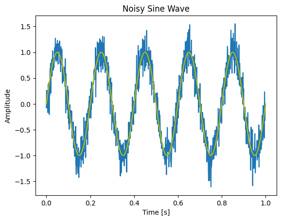
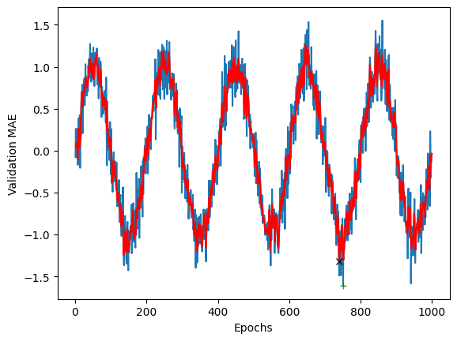
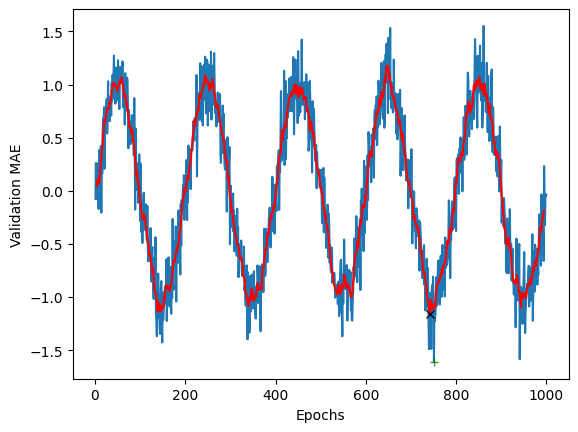
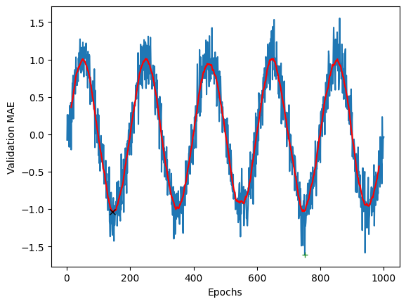

Play with one dimensional convolution#
# -*- coding: utf-8 -*-
import torch
import torch.nn as nn
import numpy as np
import matplotlib.pyplot as plt
import requests
from io import BytesIO
from scipy import signal
# Check PyTorch version
print(torch.__version__)
2.3.1
One Dimensional Convolution using SciPy#
x = np.array([1, 5, 3, 4, 8])
w = np.array([1 / 3, 1 / 3, 1 / 3])
y = signal.convolve(x, w, mode="valid")
print(type(x[0]))
print(x, y)
<class 'numpy.int32'>
[1 5 3 4 8] [3. 4. 5.]
w = np.array([.25, .5, .25])
y = signal.convolve(x, w, mode="valid")
print(type(x[0]))
print(x, y)
<class 'numpy.int32'>
[1 5 3 4 8] [3.5 3.75 4.75]
Convolution using PyTorch#
Tensors for time series#
Timeseries data or sequence data—Rank-3 tensors of shape (samples, timesteps, features), where each sample is a sequence (of length timesteps) of feature vectors.
For example consider a traffic dataset where we have several sensors collecting data over time. In this dataset, the traffic features include measurements such as speed, vehicle volume, and possibly other metrics, gathered from \(N\) different sensors over \(T\) time steps. Here’s how you might structure the analysis and modeling with this dataset.
Example Traffic Dataset Structure#
Dataset Overview:
Sensors: Each sensor monitors traffic metrics at specific locations.
Time Steps: Data is collected at regular intervals (e.g., every minute, hourly).
Features:
Speed: Average speed of vehicles at each sensor (e.g., in miles per hour).
Volume: Number of vehicles passing by each sensor in a given time.
Additional Features: Could include factors such as occupancy, vehicle types, day of the week, weather conditions, etc.
Data Representation:
The dataset could be represented in a three-dimensional array:
Shape: \(N \times T \times F\)
Where \(N\) is the number of sensors, \(T\) is the number of time steps, and \(F\) represents the features being measured (speed, volume, etc.).
# Reshape it to match the input shape of Conv1d
x = np.reshape(x, (1, 1, 5)) # (samples, timesteps, features)
x_tensor = torch.from_numpy(x) # Convert to PyTorch tensor
# Define a model with one Conv1d layer
w = torch.tensor([1 / 3, 1 / 3, 1 / 3]).view(1, 1, 3)
conv1d = nn.Conv1d(1, 1, 3, bias=False)
conv1d.weight.data = w # Initialize weights
print(conv1d.weight.data)
tensor([[[0.3333, 0.3333, 0.3333]]])
y_tensor = conv1d(x_tensor) # Apply the Conv1d layer to the input tensor
print(y_tensor.shape, y_tensor) # Print the shape of the output tensor
torch.Size([1, 1, 3]) tensor([[[3., 4., 5.]]], grad_fn=<ConvolutionBackward0>)
Applying 1D Conv. on a noisy sin wave signal#
# Generate a clean sine wave
t = np.linspace(0, 1, 1000)
frequency = 5
clean_signal = np.sin(2 * np.pi * frequency * t)
# Corrupt with noise
noise = np.random.normal(0, 0.2, clean_signal.shape)
x = clean_signal + noise
plt.plot(t, x)
plt.plot(t, clean_signal, 'y')
plt.title('Noisy Sine Wave')
plt.xlabel('Time [s]')
plt.ylabel('Amplitude')
plt.show()

w = np.array([1 / 3, 1 / 3, 1 / 3])
# Define model
conv1d = nn.Conv1d(1, 1, 3, bias=False)
conv1d.weight.data = torch.tensor(w).view(1, 1, 3)
X = np.reshape(x, (1, 1, len(x))) # Reshape to (samples, timesteps, features)
X_tensor = torch.from_numpy(X)
y_tensor = conv1d(torch.from_numpy(X))
y = y_tensor.detach().numpy().squeeze() # Convert back to NumPy and squeeze
print(x.shape, y.shape)
plt.plot(range(1, len(x) + 1), x)
plt.plot(np.argmin(x) + 1, np.min(x), "g+", alpha=0.8)
plt.plot(range(2, len(y) + 2), y, "r")
plt.plot(np.argmin(y) + 2, np.min(y), "kx", alpha=0.9)
plt.xlabel("Epochs")
plt.ylabel("Validation MAE")
plt.show()
(1000,) (998,)

# Second convolution with larger kernel size
w = np.ones((9)) / 9
conv1d = nn.Conv1d(1, 1, 9, bias=False)
conv1d.weight.data = torch.tensor(w).view(1, 1, 9)
X_tensor = torch.from_numpy(X)
y_tensor = conv1d(X_tensor)
y = y_tensor.detach().numpy().squeeze()
print(np.argmin(y), np.min(y))
plt.plot(range(1, len(x) + 1), x)
plt.plot(np.argmin(x) + 1, np.min(x), "g+", alpha=0.8)
plt.plot(range(9 // 2, len(y) + 9 // 2), y, "r")
plt.plot(np.argmin(y) + 9 // 2, np.min(y), "kx", alpha=0.9)
plt.xlabel("Epochs")
plt.ylabel("Validation MAE")
plt.show()
738 -1.156872569129415

# Third convolution with kernel size of 29
w = np.ones((29)) / 29
conv1d = nn.Conv1d(1, 1, 29, bias=False)
conv1d.weight.data = torch.tensor(w).view(1, 1, 29)
X_tensor = torch.from_numpy(X)#.float()
y_tensor = conv1d(X_tensor)
y = y_tensor.detach().numpy().squeeze()
print(np.argmin(y), np.min(y))
plt.plot(range(1, len(x) + 1), x)
plt.plot(np.argmin(x) + 1, np.min(x), "g+", alpha=0.8)
plt.plot(range(29 // 2, len(y) + 29 // 2), y, "r")
plt.plot(np.argmin(y) + 29 // 2, np.min(y), "kx", alpha=0.9)
plt.xlabel("Epochs")
plt.ylabel("Validation MAE")
plt.show()
131 -1.0394061087769686
